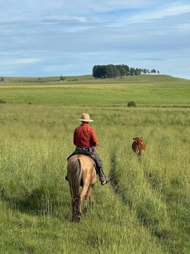
Idée voyage en petit groupe !
Uruguay
Montevideo, Gauchos & Bodegas
À la découverte d'un pays authentique :
- Montevideo - Plazas & patrimoine
- Estancia avec les gauchos (cheval, asado)
- Punta del Este - Plages
- Bodegas Moizo & Los Pinos
- Colonia del Sacramento UNESCO
📖 PRÉSENTATION
Montevideo et son patrimoine, Punta del Este et ses plages, immersion gaucho en estancia (cheval, bétail, asado), bodegas et Colonia del Sacramento UNESCO. Un circuit au cœur de l'Uruguay authentique.
🏛️ Montevideo
🐴 Estancia gaucho
🏖️ Punta del Este
🍷 Bodegas
🏛️ Colonia UNESCO
🗺️ LE CIRCUIT
1. Montevideo
2. Tacuarembó
3. Estancia
4. Punta del Este
5. Bodegas
6. Colonia
Montevideo → Tacuarembó → Punta del Este → Colonia
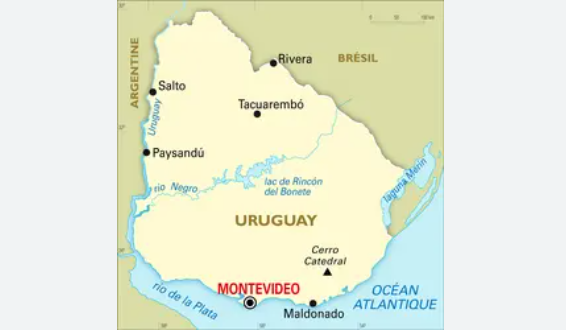
📅 PROGRAMME 1ère semaine
2
Jour 2Montevideo · Formalités · Av. 18 Julio · Rambla · Palacio Salvo
3
Jour 3Vieille Ville · Plaza Matriz · Musée Tango · Palacio Taranco · Plaza Independencia
4
Jour 4Vers Tacuarembó · Route via Florida · Durazno · Paso de los Toros · Musée Gardel
5-7
Jours 5 à 7Estancia · Vie de gaucho · Cheval, bétail · Asado · Soirées étoiles
8
Jour 8Punta del Este · Route vers PDE · Installation · Plages
9
Jour 9Punta del Este · Pain de Sucre · Casapueblo · Punta Ballena
10
Jour 10Côte · El Águila · Villa Argentina · Temps libre plage
📅 PROGRAMME 2ème semaine
11
Jour 11Bodega Moizo · Progreso · Visite & dégustation · Repas vignoble
12
Jour 12Vers Colonia · Route Colonia · Nueva Helvecia · Côte rioplatense
13
Jour 13Colonia · Vieille ville UNESCO · Real de San Carlos · Fortaleza
14
Jour 14Bodega Los Pinos · Dégustation · Retour Montevideo
15
Jour 15Montevideo · Cerro / Fortaleza · Palermo, Parc Rodó · Castillo Pittamiglio
16
Jour 16Montevideo · Marché du Port · Théâtre Solís · Pocitos / Ramírez
17
Jour 17Départ · Temps libre · Aéroport Carrasco · Vol retour
🏛️ MONTEVIDEO Capitale vibrante
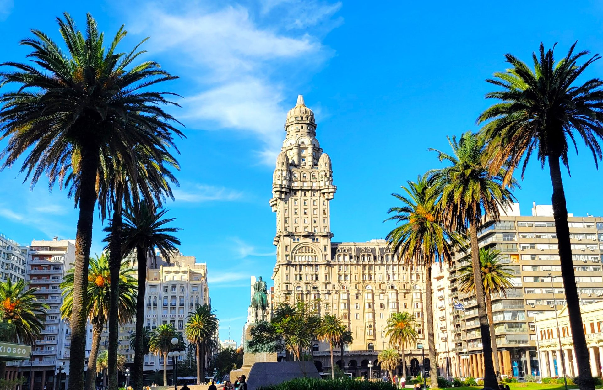
Plaza Independencia
Palacio Salvo
Puerta de la Ciudadela
Vieille Ville
Plaza Matriz
Calle Sarandí
Cathédrale
Rambla
Musée du Tango
Marché du Port
Palermo & Pocitos
🐴 IMMERSION GAUCHO Estancia
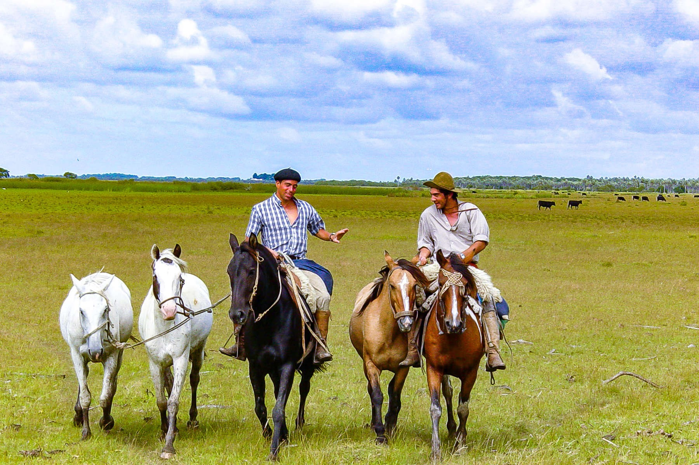
Chez Juan - Estancia
Participation à la vie du ranch. ~1 000 vaches · ~2 000 moutons · Centaine de chevaux. Monter comme un gaucho (cheval au pas), gestion du bétail, asado au feu de bois, récits sous les étoiles.
3 nuits d'immersion
- Cheval au pas
- Gestion du bétail
- Asado au feu de bois
- Récits sous les étoiles

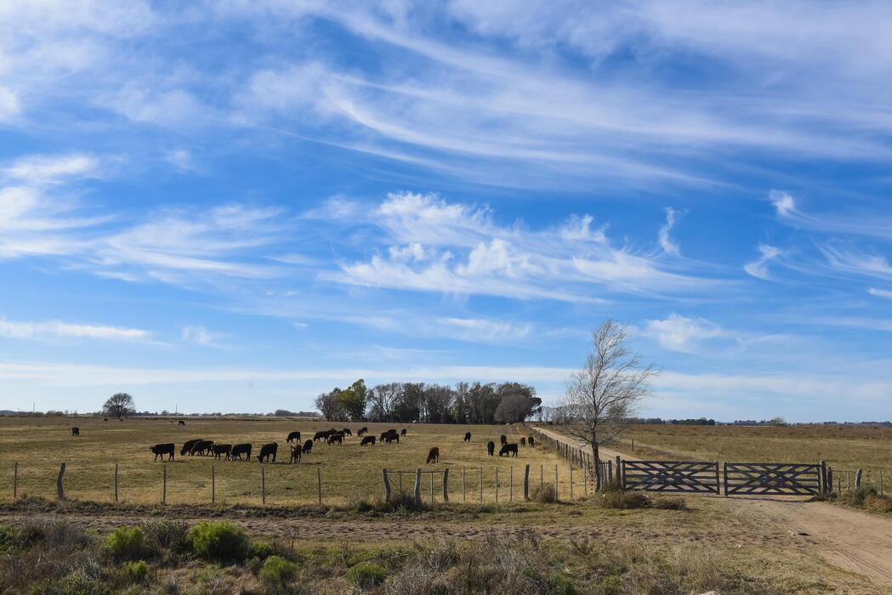
🏖️ CÔTE & COLONIA
Punta del Este
Perle balnéaire. Plages dorées, Casapueblo (Carlos Páez Vilaró), Pain de Sucre, Punta Ballena. Élégance et couchers de soleil.
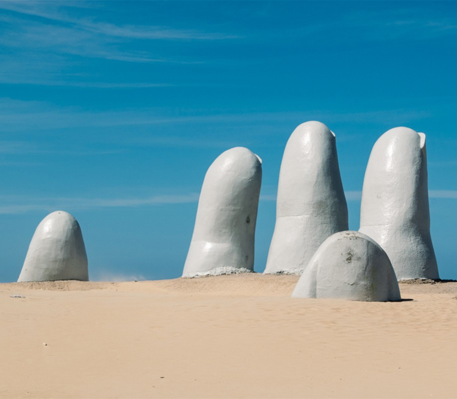
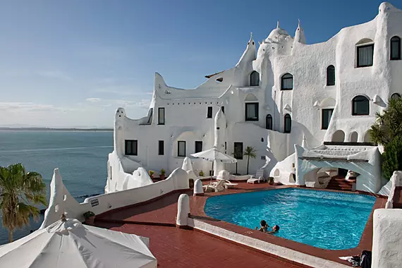
Colonia del Sacramento
Ville coloniale UNESCO. Ruelles pavées, Real de San Carlos, phare, charme intemporel sur le Río de la Plata.

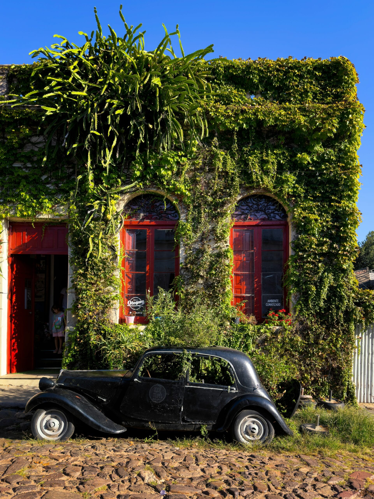
🍷 VIGNOBLES Tannat & terroir
Bodegas Moizo & Los Pinos
Visites, dégustations et repas dans les bodegas de Progreso (Moizo) et Nueva Helvecia (Los Pinos). Le cépage Tannat, originaire de Madiran dans le Sud-Ouest de la France, signature de l'Uruguay.
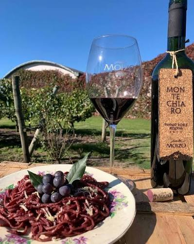
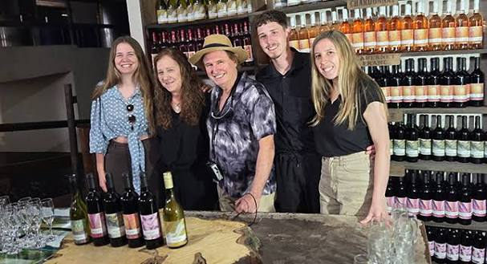
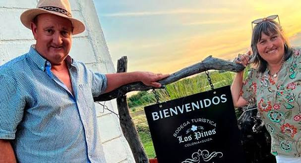
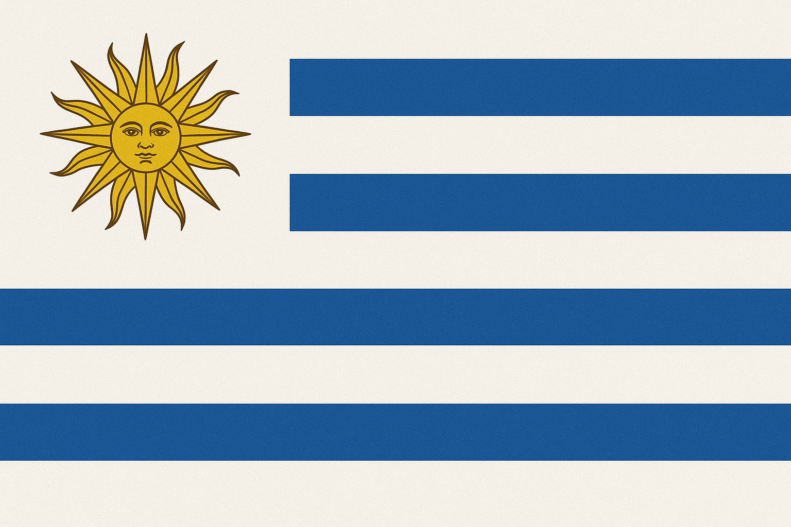
ℹ️ INFORMATIONS PRATIQUES
Passeport
Valide 6 mois après le retour. Pas de vaccins obligatoires.
Décalage & langue
- 4 ou - 5 h (pas d'heure d'été). Espagnol.
Monnaie
Peso uruguayen. Change casas de cambio. Pas à l'aéroport.
Inclus
Tous les PDJ et déjeuners, 3 dîners. Wi-Fi (sauf estancia).
💡 CONSEILS Pratique & budget
Chaussures
Prises 110/220V
Sécurité
Répulsif
Coût de la vie ≈ - 15 % vs France. L'Uruguay n'est pas un pays bon marché.
Prix indicatifs
- Déjeuner ~15 €
- Bière 50 cl ~3,20 €
- Essence ~1,70 €/L
- Wi-Fi partout sauf Estancia
Photos : dossier images/ · Uruguay - Montevideo, Gauchos & Bodegas